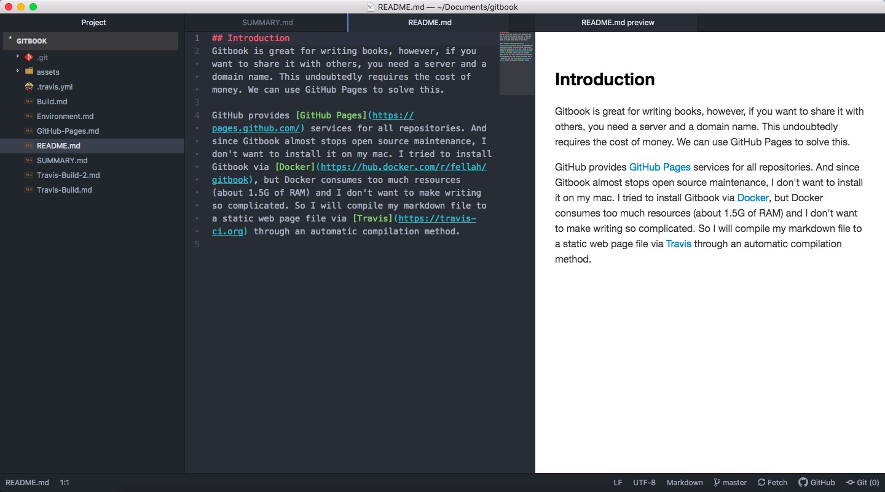

Outline¶
- git installation
- Atom installation
- Python packages
Git Installation¶
install Homebrew by using commond:
/usr/bin/ruby -e "$(curl -fsSL https://raw.githubusercontent.com/Homebrew/install/master/install)"brew install gitNo need to update. It will update automatically before any installation.
Atom Installation¶
Go to the Atom to download the latest version. And also install essential packages:
language-markdown
markdown-preview-enhanced
markdown-table-editor
Python packages¶
nstall the mkdocs package using pip:
pip install mkdocs